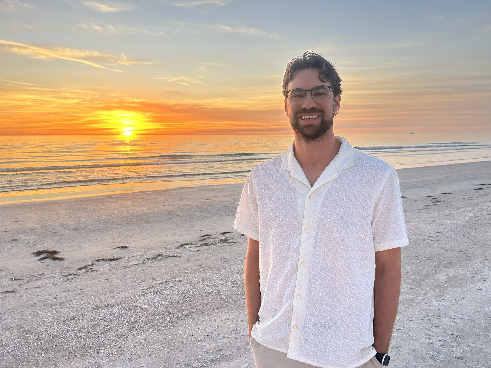
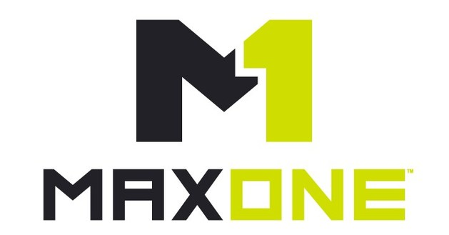
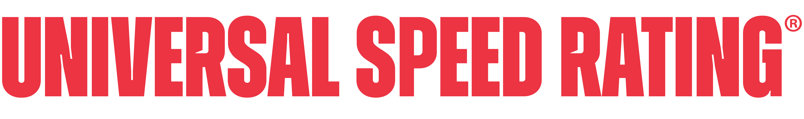
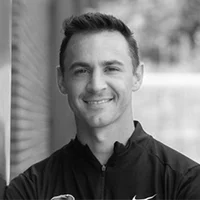
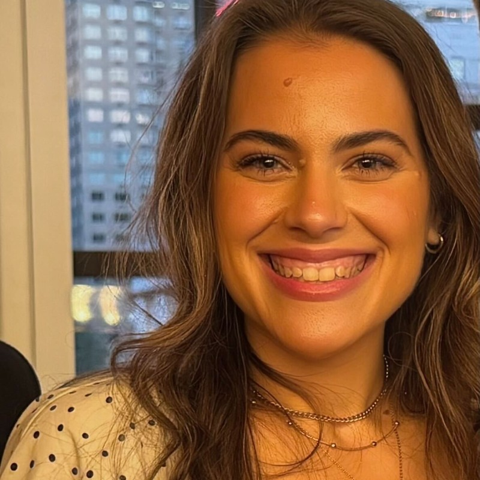
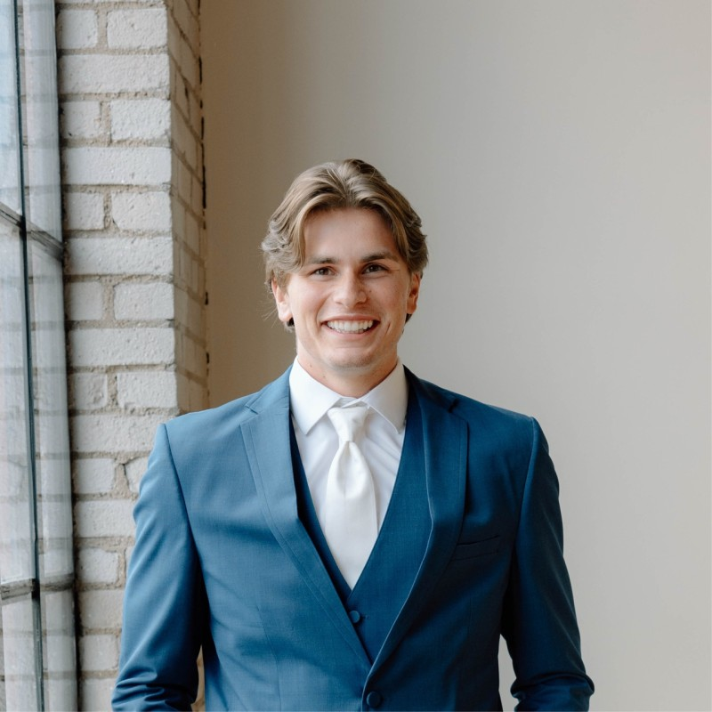

Steady when it gets messy
I stay calm, ask better questions, and help turn ambiguity into next steps.
Customer Success | Implementation | Customer-facing startup operator

My name is Luke Warner, and I am an empathetic problem solver with a background in SaaS startups across customer success, marketing, and growth. I've built CS plans from scratch, supported high-touch customers, and helped growing teams turn customer relationships into adoption, retention, and revenue.
Career Highlights

What people can count on from me
The people side of the work has always mattered most. I like being someone customers and teammates can trust when the answer is not obvious and the stakes feel real.
I stay calm, ask better questions, and help turn ambiguity into next steps.
I care about earning trust, following through, and making people feel supported.
I am a team-first player, and do my best work when collaborating with teammates.
What you can’t see from my resume
True North Fleet had been a longtime Dover customer, but usage had stalled. A new Head of People joined the company, had never used Dover before, and was considering bringing in her own hiring processes. That created a real churn risk, especially because her recruiting team also saw Dover as a potential competitor to the way they already worked.
I focused first on earning trust with the new Head of People. I walked her through the platform, helped her understand that Dover was there to make her team’s work easier, and showed how it could support faster, more efficient hiring. From there, I helped onboard her recruiters, answered questions, joined additional calls with hiring managers, and became more embedded in their hiring workflow than a traditional CSM motion might require.
We kept True North Fleet as a customer, rebuilt trust with a new decision-maker, got the recruiting team bought into the platform, and increased adoption across the account.
This story shows how I approach at-risk accounts: understand the customer’s world, earn trust with new stakeholders, identify what is blocking adoption, and do the practical work needed to help the customer succeed.

MaxOne Protecting trust during a major product outage Led customer communication through a high-pressure outage and helped preserve trust through honesty, urgency, and steadiness.During my time as Director of Customer Success at MaxOne, we went through a major platform transition that caused a serious outage across our customer base. For several weeks, many customers were affected, and some were unable to use the product in the way they needed. It created a high-pressure moment with real churn risk.
As the primary customer contact, I owned communication throughout the outage. I focused on being prompt, honest, calm, and clear. I kept customers updated, acknowledged the impact, avoided overpromising, and worked internally to understand timelines and advocate for what customers needed. My goal was to make sure customers knew we were taking the issue seriously and working as quickly as possible to resolve it.
The outcome was mixed, as some customers needed an immediate solution and chose to leave. But with others, we were able to preserve trust by communicating proactively, following through on commitments, and showing up consistently during a difficult moment. The experience made me a much stronger customer communicator and taught me how much trust can be built, or lost, in moments of pressure.
This story shows how I handle hard customer situations: stay calm, communicate clearly, tell the truth without creating panic, advocate internally, and protect the relationship even when the product experience is not where it needs to be.

Universal Speed Rating Building lifecycle systems that helped the team scale Rebuilt CRM lifecycle stages, automated sales and marketing workflows, and layered in AI-assisted reporting across a 15K-20K contact base.When I joined Universal Speed Rating, the CRM was messy, under-segmented, and full of manual work. We had roughly 15,000-20,000 contacts, but they were not organized cleanly across lifecycle stages, lists, or communication paths. That made it harder for sales, marketing, and customer-facing teams to follow up quickly, personalize messaging, and understand where people were in the funnel.
I rebuilt the lifecycle structure inside the CRM and created automated workflows across the full funnel: new contact, lead, sales qualified lead, opportunity, customer, and churned. Those workflows connected marketing emails, sales tasks, internal notifications, reporting, and customer/prospect segmentation. From there, I layered in AI-assisted workflows for paid ad reporting, performance dashboards, campaign planning, and lifecycle analysis.
The systems saved time, reduced manual work, improved segmentation, created cleaner handoffs, and gave the sales team faster follow-up paths with fewer missed tasks. That operational foundation supported the company’s growth from roughly $300K to $1.2M ARR.
This story shows how I use systems thinking to create leverage. I can build customer and revenue operations infrastructure that helps teams move faster, communicate better, and scale without relying on manual work.
Director of Sales, Universal Speed Rating
Collaborated on sales and marketing strategy, customer acquisition campaigns, email campaigns, and customer storytelling at USR.
“I don’t think I could boil my time working with Luke down to one stand out characteristic or experience because there are many, but two stand out the most. First is Luke’s constant team player attitude. Especially in a fast-moving startup like USR, there’s no room for ‘that’s not my job,’ and that’s a phrase I don’t think I can see coming from Luke. He was always willing to take on any task or project if he knew it would help the team. The second is his ability to rapidly develop new skill sets. When I joined the USR team, we’d never run paid ads on Meta. We brought in a consultant to work with Luke, and within a matter of weeks, Luke had developed an in-depth understanding of how to drive traffic on paid social, and we were able to bring ads in house. Working with Luke has been a true pleasure, and I hope we get to work together again in the future.”

Director of Customer Success, Universal Speed Rating
Worked together on customer messaging, onboarding email campaigns, and customer case studies at USR.
“Luke is the kind of guy every team hopes for, a natural culture builder who makes the work enjoyable while raising the bar for everyone around him. Reliable, communicative, and thoughtful in his work. He consistently delivered real value and insight in both my role on the sales team and within customer success. I still use marketing tactics and strategies that he taught me in my work today. I'd love the opportunity to work with him again in the future.”

Chief of Staff, Assembly
Direct manager at Dover during Luke’s time on the Customer Experience team.
“Luke brings empathy, ownership, and steadiness to customer work. He builds trust with customers quickly and is the kind of teammate people want beside them.”

Recruiter, Insight Global
Worked under Luke as a marketing content manager at Universal Speed Rating.
“Luke leads with clarity, encouragement, and trust. He gives people room to own their work while staying close enough to help them do it well.”
Customer Success / Operations Manager, Universal Speed Rating
Worked alongside Luke as a colleague at Universal Speed Rating.
“I had the opportunity to work with Luke over the past three years, and he was someone I could always count on. He's a strong communicator, follows through on his commitments, and consistently takes ownership of his work. I appreciated working with him and know he'll make a positive impact on whatever team he is on.”
CEO, Raiz
Lifelong friend who can speak to Luke’s character, integrity, and loyalty.
“Luke is loyal, steady, and deeply principled. He shows up for people with integrity, and that character carries into the way he works and leads.”
Why Customer Success
After time across sales, marketing, and growth, the common thread has stayed the same: my passion and skill-set belong when I am earning the customer's trust, helping drive value through product, and becoming a strategic advisor for our customer base. I am a Customer Success Manager at heart.
I started my career at fast-moving startups where the job was rarely just one job. That shaped how I work: I like being close to customers, close to the product, and close to the team trying to figure out what needs to improve next.
The marketing and growth chapter gave me a broader view of the customer journey, but it also clarified what I want to do long term. I want to own relationships, solve problems with customers directly, and help people get measurable value from software.
01 / 04
Best-fit roles include Customer Success, Implementation, Customer Experience, Account Management, and customer-facing startup roles where relationships, adoption, and trust matter.
If you want to get to know me outside of work, start here →